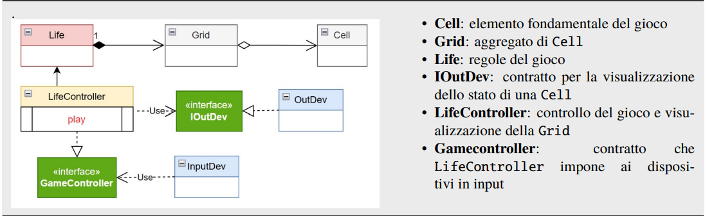

Introduction
Goal Sprint3: Realizzazione in Java del Game of Life di Conway, con GUI del gioco mediante pagina Web.
Risultato dello Sprint2: è stato realizzato un sistema (deployed in un file conway26Java-1.0.jar) che contiene un
insieme di interfacce e classi organizzate nella seguente architettura.

Questo sistema costituisce il punto di partenza per lo sviluppo dello Sprint3. Evoluzione del sistema da gui locale a gui distribuita usando una pagina HTML come dispositivo di I/O.Requirements
• specificare la configurazione iniziale della griglia del gioco • vedere l’evoluzione del gioco in forma opportuna : In particolare, il committente desidera che la vista del gioco (e la configurazione iniziale) sia realizzata mediante una pagina HTML • fermare e far ripartire l’evoluzione del gioco • pulire (a gioco fermo) la configurazione della griglia del gioco • la pagina deve costituire un componente che si relazione conl’applicazione secondo la architettura riportata in IoJavalin integrato oppure secondo la architettura riportata in IoJavalin esterno alla applicazione • il gestore del gioco sarà l’utente che ha aperto per primo (owner) una pagina HTML collegata al gioco. In altre parole, solo la pagina dell’owner avrà pulsanti di comando START/STOP/CLEAN/EXIT attivi • la pagina HTML deve essere aggiornata in modo automatico man mano il gioco procede • un utente non owner che si collega mentre il gioco è in corso, dovrebbe vedere lo stato attuale della griglia in modo corretto • il deployment del gioco deve avvenire mediante Docker
Requirement analysis
" "
Problem analysis
STRUTTURA Affrontiamo qui lo scenario Javalin esterno, in quanto propedeutico ai sistemi software basati su microservizi. Si tratta di realizzare un sistema distribuito, in cui 1. una parte dei sistema (la erogazione di una pagina HTML, in breve GUI) è del tutto nuova (si veda Job1) rispetto allo Sprint2 2. una parte del sistema (l’applicazione) è già disponibile e deve essere solo ‘adattata’ a interagire con la GUI (si veda Job2)INTERAZIONE ciascun componente di un sistema distribuito deve avere un nome. Dunque: • alla applicazione diamo il nome: lifectrl • al componente che include iojavalin diamo il nome: guiserver Per quanto detto nella analsi dei requisti, il primo prototipo adotta le WebSocket come tecnologia per le comunicazioni tra i componenti. Dunque, lifectrl si deve manifestare al guiserver aprendo una connessione via webseocket sulla porta 8080. Ciò implica che il guiserver debba gestire in modo opportuno almeno due connessioni: • la connessione con la pagina owner, che denotiamo con pageCtx • la connessione con l’applicazione, che denotiamo con lifeCtrlCtx 1] ANALISI DELLE COMUNICAZIONI SERVER-PAGINA 2] ANALISI DELLE COMUNICAZIONI SERVER-APPLICAZIONE
Test plans
Benchè sia difficile definire test automatizzabili per applicazioni che implicano GUI, una volta specificate le forme di interazione tra i componenti, si possono impostare TestUnit quali: • invio di un comando, come fatto in CallerServerInteraction, facendo asserzioni sul risultato atteso
Project
Tenendo conto di quanto detto dall’analisi, a livello di progettazione dobbiamo innanzi tutto: 1. impostare il codice Javscritpt che interpreta i messaggi descritti in Analisi delle comunicazioni server-pagina. A questo fine definiamo il file • wscanvascontrol.js per pagine che impostano Una griglia globale (con canvas) • wscontrol.js per pagine che impostano Una griglia granulare 2. completare il codice di OutInGuiInteraction introdotto in Analisi delle comunicazioni server applicazione 3. approfondire la problematica Aggiornamento della grid in GUI e prendere una decisione motivata se usare diapatch o request Occorre anche realizzare il seguente requisito: un utente non owner che si collega mentre il gioco è in corso, dovrebbe vedere lo stato attuale della griglia in modo corretto Key point: impostare una funzione nel server che invvii informazione su tutte le connessioni WS attive.
Testing
Utilizzo della suite JUnit e possibilità di automatizzare i test con gradle.
Deployment
Build del progetto con gradle. Il deployment dell' applicazione avviene tramite Docker: il servizio è distribuito come container accessibile via rete.